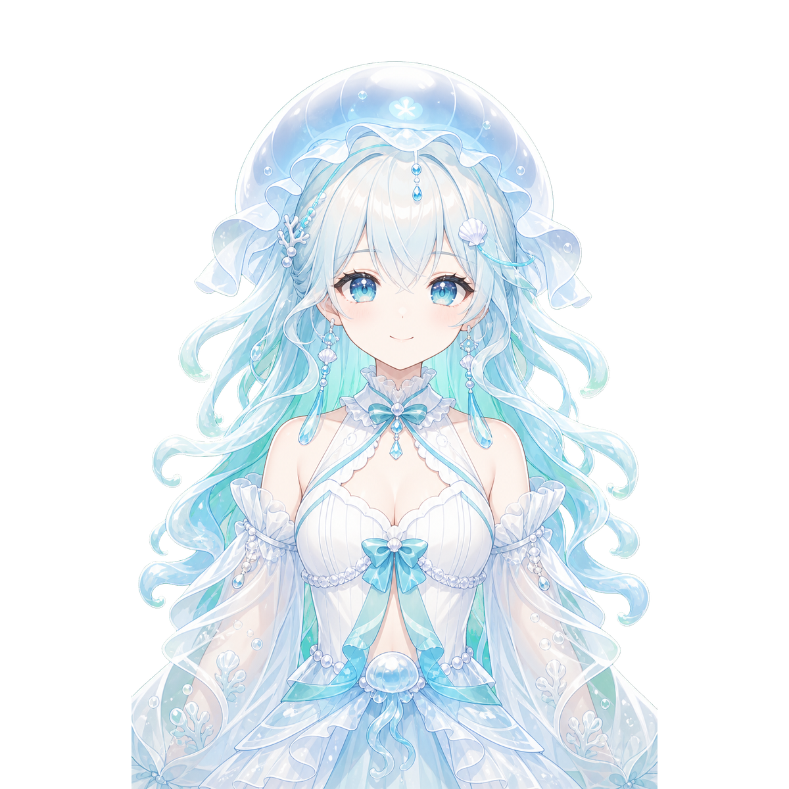
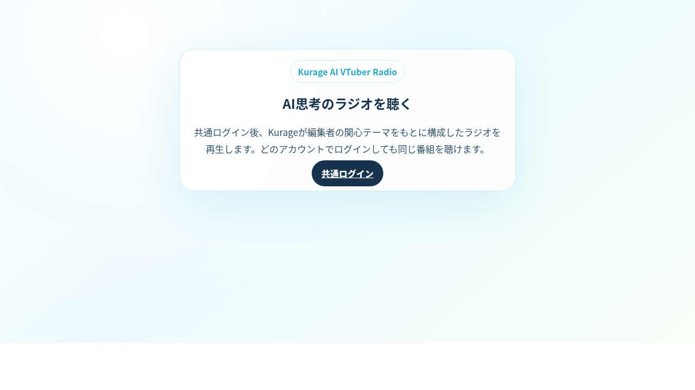

KurageがDJを務めるAI VTuberラジオ。URLを渡すだけで GitHub・ブログ・ニュースの内容を考察した番組を自動生成します。 眠りに入りやすいテンポで、深く学べるように話し続けます。

編集者がURLを選んでラジオを開始するだけ。リスナーはログインして同じ番組を聴けます。 URL資料の取得や台本生成が遅くても、Kurageは話し続けます。
AI VTuberキャラクター「Kurage」が穏やかな声でDJを担当。台本生成が遅れても会話が途切れないよう、プリロールで繋ぎながら話し続けます。
GitHub リポジトリ・ブログ記事・ニュース URL を1行ずつ入力するだけ。AIが内容を読み込んで、1〜6時間の番組台本を自動作成します。
声は穏やか、内容は深く、テンポはゆっくり。睡眠学習動画として視聴時間を稼ぎながら、リスナーがリラックスして学べるリズムで構成されます。
ストリームキーを入力するだけで YouTube Live へ自動配信。VTuber 画面を配信用ビューワーとして使い、長尺の睡眠学習動画を量産できます。
編集者アカウントがテーマ URL を選んでラジオを開始。リスナーはどのアカウントでログインしても、同じ現在の番組を受信して聴けます。
YouTubeのコメント欄のように、リスナーも編集者もリアルタイムでコメントを投稿できます。台本生成の進捗はループログで確認できます。
3ステップで睡眠学習ラジオが始まります。
編集者がGitHub・ブログ・ニュースのURLを入力してラジオを開始します
AIがURLを読み込み台本を作成。KurageがリアルタイムTTSで話し続けます
ログインしたリスナーが同じ番組を受信。YouTube配信も同時に行えます

ログイン後すぐにラジオを開始できます。URLを入力して時間を選ぶだけ。 管理者はYouTube Liveストリームキーを設定して配信も可能です。 配信中はリスナーもログインして同じ番組を聴けます。
Kurageシリーズの技術を組み合わせたリアルタイムAIラジオパイプライン。
ローカルLLMで台本生成。URLを読み込んで番組コンテンツを作成
穏やかな日本語音声合成。ストリーミング再生で会話が途切れない
口パクアニメーションのVTuberアバター。YouTubeキャプチャに最適化
バックグラウンドで関連ページを自動収集。フォアグラウンドの話は止めない